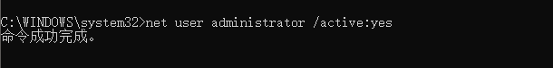
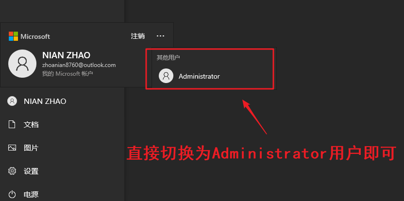
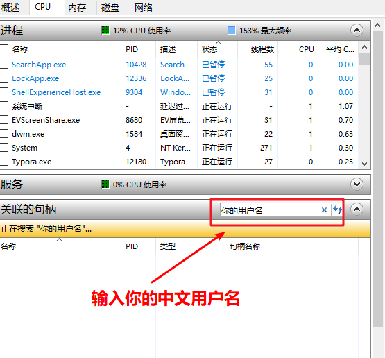
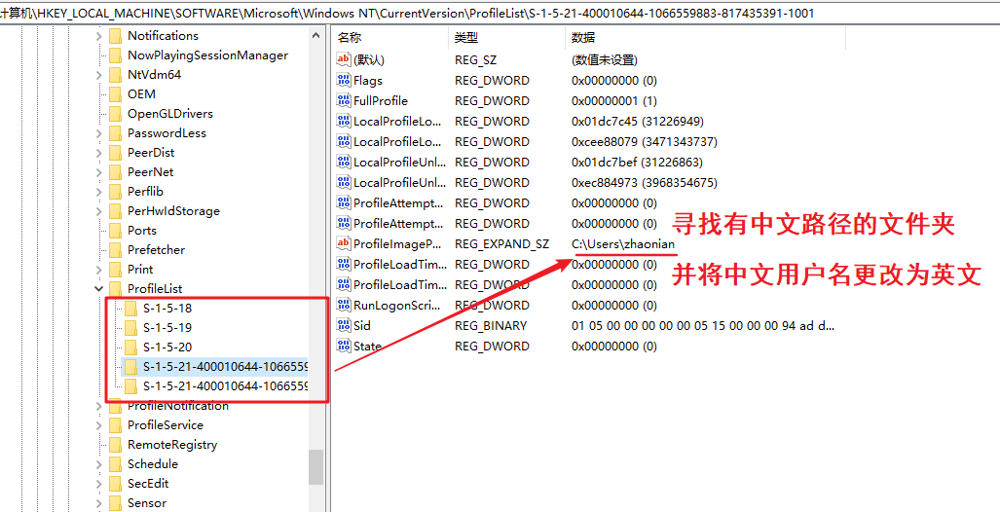
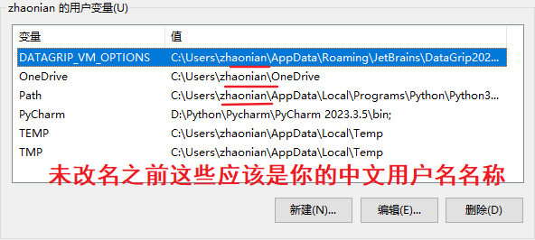
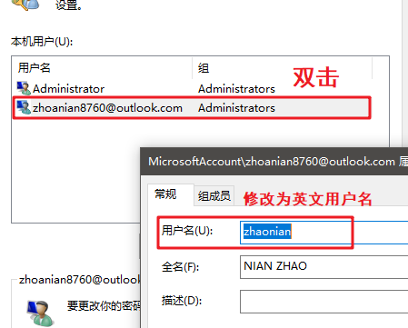
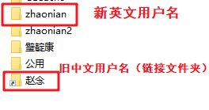

Windows如何将中文用户名修改为英文 [一劳永逸]
第一步
将Windows用户切换为Administrator
以管理方式打开CMD输入：
1
net user administrator /active:yes

显现命令成功即可
第二步
- 注销当前用户切换至Administrator用户

- 初次切换至Administrator时会有提示添加隐私内容
- 全部不勾选–>下一步即可
第三步
直接进到C盘用户目录下修改用户名文件夹为英文
如若受阻：
- 打开任务管理器–性能–资源监视器–CPU–搜索关联的句柄“你的中文用户名”
- 结束所有的带中文用户名的进程，结束进程/结束进程树


这里我已经改为了英文，所以没有中文用户名的进程了
第四步
英文用户名修改成功之后再继续以下操作
修改注册表
- 开始菜单输入regedit 并以管理员方式打开：
1
regedit
1.寻找路径：ProfileList
HKEY_LOCAL_MACHINE\SOFTWARE\Microsoft\Windows NT\CurrentVersion\ProfileList

2.寻找第二路径：User Manager
HKEY_LOCAL_MACHINE\SOFTWARE\Microsoft\User Manager\Users
第五步
- 关闭Administrator账号
- 以管理员方式启动CMD
- 输入:
1
net user administrator /active:no
- 注销Administrator账号，回到自己的用户界面
第六步
- 更新环境变量
- 此电脑–右键属性–高级系统设置–环境变量–找到用户变量
- 将所有包含中文用户名的路径更改为英文

第七步
更新用户账户信息
Win+R,输入：
1
control userpasswords2
双击打开你的用户名并修改

第八步
- 重启电脑
- 打开电脑你会发现之前涉及到你的中文用户路径下的应用全都不能用了
- 此时别慌
- 我们使用创建符号链接的方法解决这个问题
① 以管理员身份打开CMD，并输入：
1
mklink /d "C:\Users\你的中文用户名" "C:\Users\你修改的英文用户名"
- 当提示：链接成功时–打开C盘下的user文件夹–你会发现有一个与之前中文用户名一模一样的链接文件夹在最下面–此时就能使用之前的东西了

此时 你的英文用户名已修改成功
倘若 提示不能修改文件夹 定是进程受阻
找到相关服务（如“MSPC Manager Service”），右键选择“停止”或“重新启动”即可
注意事项：
1，备份重要数据：修改用户名涉及注册表操作，建议提前备份重要文件，以防万一。
2，谨慎操作注册表：确保按照步骤修改，避免误删关键项。
3，软件路径问题：部分软件可能仍需重新安装，确保路径正确。
4，桌面文件丢失：如果重启后桌面只剩“此电脑”和“回收站”，用符号链接方法即可恢复。